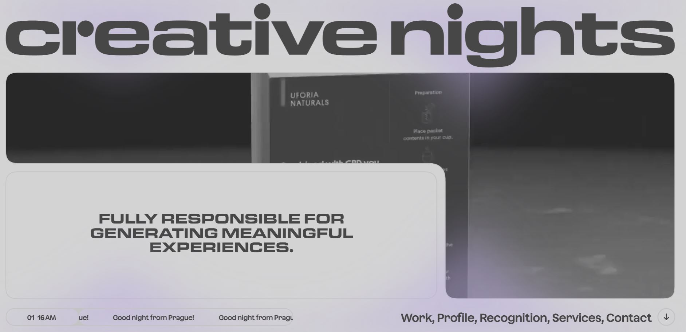

Review 02
creative-nights.com
Creative-nights is a small design studio that creates "experience to enable people to feel engaged, awakened in postprint era". The website is really interactive and aesthetically pleasing. They are playfull with their content and spaces. There is a lot of movement going on this website. They display their work in a way that attracts the eye of users. Everytime the user moves their mouse, they are bond to trigger an interaction or animation to a component on the website. This help keeps the user entertain and their attention. They have the following sections: work, profile, recognition, services and contact. Each sections serve their purposes by displaying the information you would expect from them.